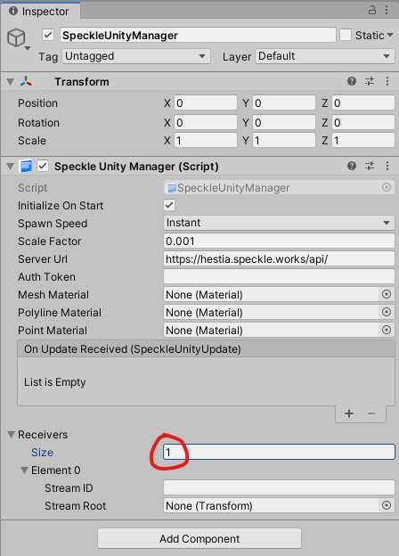

Getting Started
This article describes how to connect to your first stream with SpeckleUnity
Step 1: Create a SpeckleUnityManager
In your scene's hierarchy view, right click and select "SpeckleUnityManager" to create a new manager instance:

This will add a new GameObject to your scene which only has the SpeckleUnityManager component attached to it:

A single instance of a manager is designed to connect to a single speckle server and authenticate as a single user for all interactions it makes. This means that multiple managers will allow you to connect to multiple servers or connect as multiple users at the same time.
Step 2: Configure your SpeckleUnityManager
In the inspector of our manager object, there are a number of fields exposed to us but for this quick start guide we will be focussing only on the following fields:
- Server Url
- Login Email
- Login Password
- Mesh Material
- Receivers
Your server URL is the root URL to the Speckle server you wish to connect to, followed by "/api/". By default, this field is set to the public hestia server that is available to all users. If you require to connect to a different server, like a privately hosted company server, just change this default value to the URL of your new server.
The email and password fields simply need to be the same as the credentials you use for signing into your Speckle server. Note that at the time of writing, the password field is exposed as a plain string so be sure to not accidentally share a screenshot of your password!
The Mesh Material field allows you to assign what material all mesh objects in your received streams are rendered with. By default this field is left null because your Unity project may be using the built in renderer, the Universal Render Pipeline or the HD Render Pipeline. Each of these pipelines require their own materials types since they cannot render materials created for the other pipelines. So you can either assign an existing material from your assets folder, or simply create a new material and assign that in. Leaving this field empty will cause all objects to be rendered with a bright magenta color.
Finally, the receivers field expands to reveal a list of receivers. By default it doesn't have any, so set the length of your receivers list to be 1 as shown below:

This will add a new receiver instance which you can further configure with the ID of the stream it needs to receive as well as an optional field of type Transform called Stream Root. This Stream Root field specifies what object in the scene the stream objects will spawn under. If no value is set, a new object will be created by default. For now, just paste in the ID of your stream.
Step 3: Receive a Stream
If you enter play mode now, assuming you configured your manager correctly, you should be able to see your stream appear after a moment, rendered with the material you assigned! The waiting time is proportional to the size of the stream. This includes the number of objects in the stream as well as the size of the meta data per object. As your stream is being processed, the Unity console should show you logs of what the progress percentage is or if anything went wrong.
